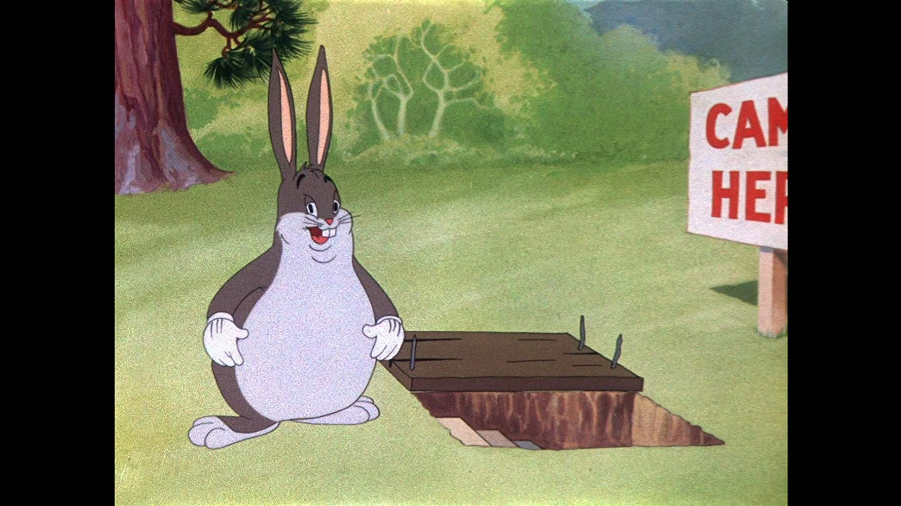

- Link this page back to the index
For Cybersecurity:
- OMJ Paperwork
- Wreck this page with horrible styling and dank memes
For really real. the OMJ paperwork is going to end up keeping you from passing the course this quarter. It's a requirement of the course.
